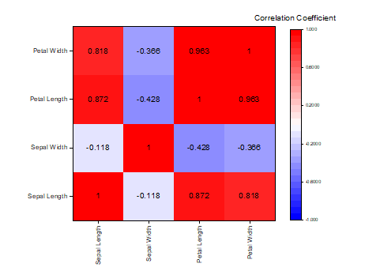
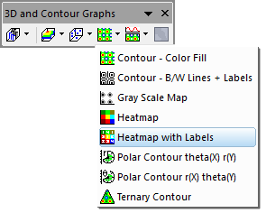

Heatmap mit Beschriftungen
Heatmap-Labels
- 
Datenanforderungen
- Arbeitsblatt: Wählen Sie XY-Spalten oder XYZ-Spalten (voll oder Teilbereich) oder eine virtuelle Matrix aus.
oder
- Matrix: Eine Matrix von Z-Werten
Diagramm erstellen
Aktivieren Sie das Matrixblatt oder wählen Sie die gewünschten Daten im Arbeitsblatt aus.
Wählen Sie im Menü .
oder
Klicken Sie auf die Schaltfläche Heatmap mit Beschriftungen auf der Symbolleiste 3D- und Konturdiagramme.
- 
Vorlage
HEAT_MAP_WITH_LABELS.OTPU
Hinweise
Dieses Diagramm wird auf dieselbe Weise wie die einfache Heatmap erstellt, außer dass jeder Block beschriftet ist.
- Wenn die Heatmap aus XY-Arbeitsblattdaten erzeugt wird, bestehen die Standardbeschriftungen aus den Einteilungsanzahlen. Ändern Sie die Zu berechnende Eigenschaft durch Klicken auf das grüne Schloss auf der Heatmap und Auswahl von Parameter ändern.
- Wenn die Heatmap aus XYZ-Arbeitsblattdaten erzeugt wird, bestehen die Standardbeschriftungen aus den mittleren Z-Werten jeder Einteilung. Ändern Sie die Zu berechnende Eigenschaft durch Klicken auf das grüne Schloss auf der Heatmap und Auswahl von Parameter ändern.
- Wenn die Heatmap aus einer virtuellen Matrix oder Matrix erstellt wird, zeigen die Beschriftungen die Z-Werte für jeden Block (Überschneidung Zeile/Spalte).
- Um numerische Beschriftungen auf der Heatmap zu formatieren (z. B. zum Bestimmen der Dezimalstellen, Anzeige als % etc.), klicken Sie doppelt auf die Zeichnung, um Details Zeichnung zu öffnen, klicken Sie auf die Registerkarte Beschriftung und wählen Sie Numerisches Anzeigeformat.